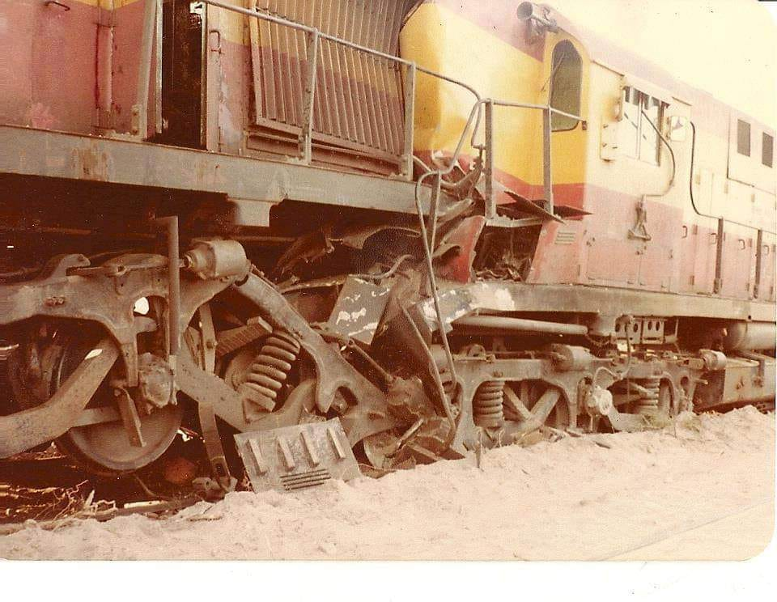

La locomotora 8500 fue dejada en un desvio de KM11, lugar de trabajo de Alfredo Atampiz. La habian dejado detenida y sin calzar, por lo que cuando se le fue el aire del equipo de freno (algo muy comun por mas que la unidad sea vieja o buena) empezo moverse, salio del desvio y fue tomando velocidad dada la topografia del terreno que la favorecia, la 8500 choco con la 8514, que venia bajando con un petrolero, en una curva. A pesar de lo terrible del accidente no hubo victimas fatales".
El conductor que cuenta la historia es mi papá. Heriberto Egea, nacido en Monte Comán - Mendoza, un pueblo ferroviario ubicado a 50km de San Rafael, hoy en dia es un pueblo fantasma, donde los jóvenes se tienen que ir cuando terminan la secundaria porque no hay fuentes de trabajo ni estudio. Cuando cerro el ferrocarril el pueblo empezo a morir de a poco, como le pasaron a muchos pueblos. Hoy en día Heriberto se jubiló hace 1 año, después de 39 años de servicio. Por suerte pude seguir su camino, compartiendo la misma pasión por los ferrocarriles y el mismo trabajo, ser conductor de trenes de la Línea San Martín